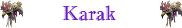

Campo Elettrico;

|
|
Climate/Terrain | Piano Elementale dell'Aria / Montagne o Colline |
| Frequency | Common / Rare | |
| Organization | Piccolo Stormo | |
| Activity Cycle | Day | |
| Diet | Carnivore | |
| Intelligence | Semi-Intelligent (2) | |
| Treasure | None | |
| Alignment | Neutral | |
| No. Appearing | 2d3 | |
| Armor Class | 5 | |
| Movement | 6, Fl. 21 | |
| Hit Dice | 5 | |
| Thac0 | 15 | |
| No. of Attacks | 1 becco | |
| Damage / Attacks | 1d10+2 (taglio) | |
| Special Attacks | Istinto Predatorio; Campo Elettrico; |
|
| Special Defenses | Resistenza Superiore all'Elettricità; | |
| Special Weakness | Nessuna | |
| Magic Resistance | None | |
| Senses | Vista Acuta | |
| Size | Large (3 m. dal becco alla coda) | |
| Morale | Elite (13) | |
| XP value | 389 |
Descrizione
La creatura ha un corpo sinuoso e serpentino con un collo e una coda molto lunghi. Due coppie di ali piumate si protendono dal corpo, un paio sulla parte superiore e l'altro su quella inferiore. Il corpo è in prevalenza ricoperto di ciuffi di piume gialle alla base del collo e della coda. La testa ha un becco dentato di colore nero e quattro occhi, un paio sopra il becco e l'altro sotto. Un Karak adulto (da 5 a 40 anni) misura circa 3 metri dal becco alla coda, con un'apertura alare di circa 4,5 metri ed un peso di 50 kg.
Combat
I Karak sono
molto territoriali e sono sempre affamati. Attaccano quasi tutte le creature che
incontrano, in cerca di cibo o per allontanarle dal loro territorio. La creatura
può mordere violentemente con il suo becco e stordire i propri avversari con
potenti scosse elettriche.
ISTINTO PREDATORIO
(Lesser Special
Ability):
La creatura possiede un forte
istinto predatorio, per tale motivo costei riceve un
bonus costante di +1 alla Thac0
con i suoi attacchi.
CAMPO
ELETTRICO
(Moderate Special
Ability):
La creatura è in grado di
creare un campo elettrico intorno a sé stessa. Questa azione sostituisce una
comune azione di attacco ed avviene ad un
fattore iniziativa pari a +1.
Quando questa creatura attiva il campo elettrico tutte le creature presenti
intorno alla stessa (in posizione di melee) saranno investite da una potente
scossa elettrica e dovranno superare un
tiro salvezza contro raggio della
morte. Se il tiro salvezza
fallisce costoro subiranno
2d6 danni da elettricità
e risulteranno incapacitate
per il resto del round in corso.
Superando il tiro salvezza, invece, costoro
subiranno unicamente 1d6 danni da
elettricità. Una volta
azionato il campo elettrico la
creatura non può utilizzare nuovamente questa abilità speciale nei due rounds di
combattimento immediatamente successivi.
RESISTENZA SUPERIORE ALL'ELETTRICITA'
(Typical
Ability): Il corpo della
creatura è particolarmente resistente ai danni da elettricità, per tale motivo costei
ridurrà del 50% (per
eccesso) tutti i danni da elettricità
sia di natura magica che naturale provocati nei suoi confronti. Inoltre, la
creatura riceve un
bonus di +2 a tutti i tiri salvezza
debba effettuare per evitare o ridurre effetti provocati tramite l'elettricità.
Habitat/Society
Un Karak è una sorta di sciacallo predatore originario del Piano Elementale dell'Aria. È un volatile esperto, che passa quasi la sua intera esistenza in volo. Un Karak è in grado di volare fin dall'istante in cui esce dall'uovo. Il Karak è in grado di mangiare dormire ed accoppiarsi anche senza mai posare una zampa a terra. Un Karak, con la torsione del suo corpo e la variazione della frequenza del battito delle sue ali, può volare alla velocità massima in tutte le direzioni.
Ecology
Il Karak è originario del Piano Elementale dell'Aria dove risulta molto frequente incontrarlo. Nel corso di viaggi interdimensionali una coppia di queste creature è stata trasportata nel Primo Piano Materiale dove ha iniziato a procreare ed a moltiplicarsi. Nonostante, infatti, avvenga raramente è possibile incontrare questa creatura ad alta quota od nei cieli delle montagne e delle più alte colline.
Mystical Resource Sourge
(Ventricolo Sinistro del Cuore) Quantità: 1, Presenza 33% - Effetto Particolare:
Resistenza all'Elettricità
- Qualità della Risorsa:
Common.
Mystical Resource Sourge
(Ventricolo Destro del Cuore) Quantità: 1, Presenza 33% - Effetto Particolare:
Elettticità
- Qualità della Risorsa:
Common.
Mystical Resource Sourge
(Coda) Quantità: 1, Presenza 20% - Scuola di Magia:
Alteration
- Qualità della Risorsa: Common.